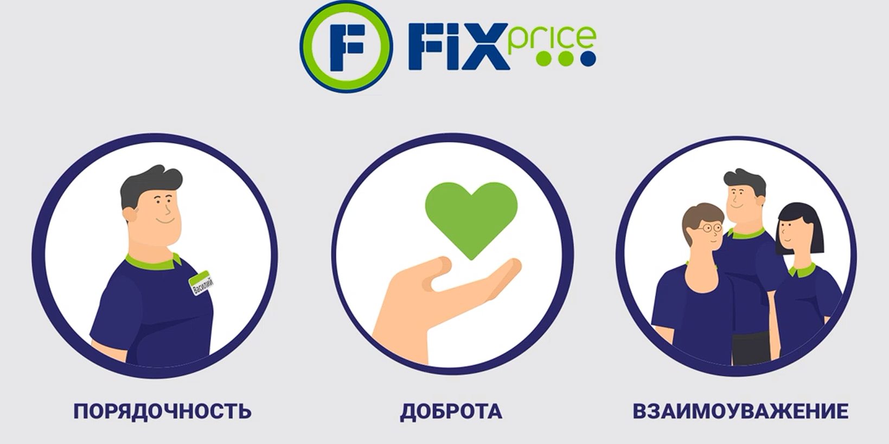

Fix Price - это международная сеть
магазинов для всей семьи с широким
ассортиментом товаров для дома
по низким фиксированным ценам!
магазинов для всей семьи с широким
ассортиментом товаров для дома
по низким фиксированным ценам!
Кратко о нас
В декабре 2007 года был открыт первый магазин международной сети магазинов Fix Price. На сегодняшний
день работают 5948 магазинов Fix Price в Латвии, Грузии, Казахстане, Киргизии, Узбекистане, а также
в Беларуси и России. Основная идея проекта – предложить покупателю широкий ассортимент необходимых
в быту товаров для всей семьи по низким ценам!
Когда наши покупатели говорят:
«Не могу поверить, что нашёл ЭТО в Fix Price!» или «Не могу поверить, что ВСЁ стоит ТАК ДЁШЕВО!», для нас нет большей похвалы.
Когда мы слышим подобные отзывы, мы знаем, что сделали свою работу правильно! Мы много трудились, чтобы подарить вам неповторимые впечатления от шопинга и превратить наши магазины в территорию, где каждую неделю вся семья наслаждается поиском чего-то особенного, интересного и полезного!
Мы предлагаем Вам самые необходимые в быту товары по экстремально низким ценам! В наших магазинах можно найти продукты и напитки, косметику и бытовую химию, посуду, одежду, игрушки, подарки и сувениры, книги, товары для праздников, декор и многое-многое другое! Всё, без чего не обойдётся каждый день, каждый праздник и неожиданный повод, – всё это вы найдёте у нас по низким ценам!
«Не могу поверить, что нашёл ЭТО в Fix Price!» или «Не могу поверить, что ВСЁ стоит ТАК ДЁШЕВО!», для нас нет большей похвалы.
Когда мы слышим подобные отзывы, мы знаем, что сделали свою работу правильно! Мы много трудились, чтобы подарить вам неповторимые впечатления от шопинга и превратить наши магазины в территорию, где каждую неделю вся семья наслаждается поиском чего-то особенного, интересного и полезного!
Мы предлагаем Вам самые необходимые в быту товары по экстремально низким ценам! В наших магазинах можно найти продукты и напитки, косметику и бытовую химию, посуду, одежду, игрушки, подарки и сувениры, книги, товары для праздников, декор и многое-многое другое! Всё, без чего не обойдётся каждый день, каждый праздник и неожиданный повод, – всё это вы найдёте у нас по низким ценам!
Деловая этика и комплаенс

“Fix Price на протяжении многих лет подтверждает статус ведущей Компании на рынке
фиксированных цен. В своей деятельности мы придерживаемся принципа ведения
добросовестного и этичного бизнеса. Каждый день мы работаем над совершенствованием
своей работы, предлагаемого товара, стремимся оправдать оказанное нам доверие
покупателей, персонала, партнеров и инвесторов. Убеждён, что приверженность
высоким стандартам и лучшим бизнес-практикам способствует развитию Компании
и каждого её сотрудника”

Fix Price строго соблюдает принципы этичного ведения бизнеса и стремится к
совершенствованию корпоративной культуры, следованию лучшим практикам
корпоративного управления и поддержанию деловой репутации на должном уровне.
В Fix Price разработаны процедуры и конкретные мероприятия, направленные на
профилактику, пресечение коррупционных правонарушений, устранению
(минимизацию) причин и условий, порождающих коррупцию, формированию
антикоррупционного сознания сотрудников Группы к любым проявлениям
недобросовестного поведения.
Горячая линия по вопросам этики и коррупции – информационный канал,
предназначенный для сотрудников, покупателей, контрагентов и иных
третьих лиц, в целях сообщения о коррупционных нарушениях, неэтическом
поведении, фактах недобросовестного поведения в Fix Price.
Приём и обработку обращений, полученных по Горячей линии,
осуществляет уполномоченный орган Компании -
Комитет по этике и комплаенсу.
Мы гарантируем, что будут рассмотрены все обращения. В целях оперативного
и эффективного рассмотрения обращения, просим предоставлять подробную
информацию с указанием контактных данных для обратной связи. Вся полученная
информация будет обработана с максимальным уровнем конфиденциальности.
Fix Price не допустит применение ответных мер по отношению к лицам,
добросовестно сообщившим о нарушениях.